Modified Dynamic Boundary Conditions¶
Under review by Aaron English and José Domínguez
Boundary geometry, normal vectors, slip modes and no-penetration configuration in DualSPHysics v6.
Boundary treatment and XML organisation¶
The modified Dynamic Boundary Condition (mDBC) uses information reconstructed inside the fluid to prescribe the state of boundary particles. A normal vector connects each boundary particle to the physical boundary surface; reflection across that surface defines a ghost node inside the fluid. Fluid neighbours around the ghost node provide the data used in the reconstruction. This differs from DBC, in which the boundary-particle density evolves through the continuity equation and the associated pressure supplies the repulsive interaction. The mDBC formulation addresses the non-physical boundary density and pressure, and the fluid–wall separation associated with DBC. These are motivations for the method, rather than an accuracy guarantee for an arbitrary case.
DualSPHysics v6 supports uniform DBC, uniform mDBC and boundary conditions selected separately by boundary identifier. The geometric description, normal generation and solver selection occupy different XML sections:
| XML location | Responsibility |
|---|---|
case/casedef/geometry |
Physical surface representation, boundary layers and fluid particles |
case/casedef/normals |
Generation or assignment of boundary normal vectors |
case/casedef/initials |
Initial fields, including interpolation from previous particle data |
case/execution/parameters |
Boundary, SlipMode, NoPenetration and numerical settings |
case/execution/special/mixboundary |
Boundary treatment for individual mkbound values when Boundary=MIX |
The excerpts below are independent selections from the stated case or format reference. Retain their enclosing case, geometry, input files and numerical settings. Combining excerpts from different cases does not produce a complete simulation.
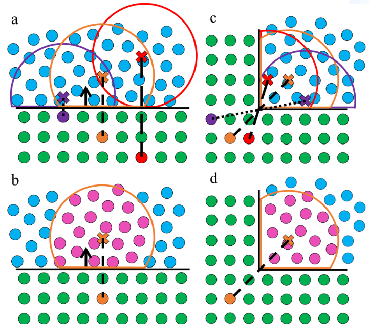
Boundary normals and particle layers¶
Surface offset, orientation and ghost nodes¶
The stored geometric normal is a displacement from a boundary particle to the actual boundary surface. Its length therefore carries geometric information; it is not merely a unit direction. Normals point towards the fluid. For a solid obstacle this means outwards from the solid; for a container it means into the container. At corners the vector connects the boundary particle to the represented surface intersection, so replacing all vectors by unit vectors destroys the required distances.
Let \(\mathbf{x}_b\) be a boundary-particle position and \(\mathbf{N}_s\) its displacement to the surface. Reflection gives
The nearest boundary-particle layer is placed half an initial particle spacing, \(d_p/2\), behind the physical surface. Additional layers lie farther inside the solid. The required number of layers depends on the kernel support and smoothing length \(h\): the teaching configuration uses three or more layers, with three sufficient when \(2h\leq3d_p\). This condition must be checked for the chosen \(h/d_p\); three layers are not a universal prescription. The sloshing example below uses \(h=2d_p\) and four layers.
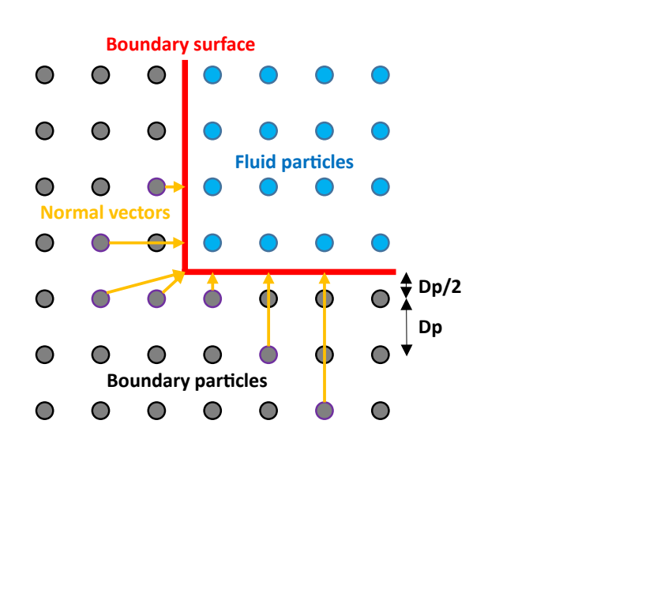
Choosing a normal-generation method¶
Two complementary approaches are available. Geometry-based generation computes the vectors from a VTK representation of the actual boundary surface. Analytical definitions instead use planes, cylinders or spheres and select particles by mkbound. They can be combined: an initial geometry reconstruction may be followed by local analytical definitions. Review the clear setting before applying a later definition over existing normal data.
Use a separate mkbound for surfaces that require different analytical definitions or different boundary conditions. The boundary identifier is not the complete particle mk: the latter also depends on the case's marker configuration. The cylinder diagram retains its own marker assignment and must not be used to infer marker numbers in another case.
Generating normals from actual geometry¶
Constructing the physical surface¶
The actual surface used for normals must be distinguished from the boundary-particle drawing. In the tank-and-obstacle construction, the container surface is drawn half a spacing inside the first container-particle layer, whereas the solid-obstacle surface extends half a spacing beyond its outermost particles. Container surface normals are inverted to face the fluid; normal inversion is disabled again before drawing solid obstacles. These operations change the geometry used for normals, rather than adding fluid particles.
The illustrative tank has width \(0.5\,\mathrm{m}\), height \(0.3\,\mathrm{m}\), obstacle width \(0.2\,\mathrm{m}\), obstacle height \(0.06\,\mathrm{m}\), and a water-level setting of 40%. Variables keep repeated dimensions consistent between the surface and particle drawings. These dimensions describe the illustration; they are not the dimensions of the separate sloshing XML excerpt below.
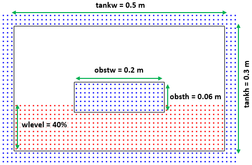
The following named drawing list is copied from the sloshing case. drawpoints="0" and drawshapes="1" generate the surface representation; setshapemode selects actual boundary shapes, and shapeout file="hdp" writes the geometry used by the later normal definition. resetdraw restores the drawing configuration afterwards. The list must be called from the case’s mainlist; defining it alone does not execute it.
XML excerpt — surface-geometry. XML location: case/casedef/geometry/commands. Source: examples/mdbc/03_Sloshing/CaseSloshingLR_NSNP_Def.xml. This is a fragment, not a complete case.
<list name="GeometryForNormals">
<setactive drawpoints="0" drawshapes="1" />
<setshapemode>actual | bound</setshapemode>
<setnormalinvert invert="true" />
<setmkbound mk="0" />
<drawbox>
<boxfill>all</boxfill>
<point x="-0.45" y="-0.1" z="0" />
<size x="0.90" y="0.2" z="0.512" />
<layers vdp="-0.5" />
</drawbox>
<shapeout file="hdp" />
<resetdraw />
</list>
XML excerpt — surface-list-call. XML location: case/casedef/geometry/commands/mainlist. Source: examples/mdbc/03_Sloshing/CaseSloshingLR_NSNP_Def.xml. This is a fragment, not a complete case.
The particle drawing is a separate step. Here the tank has four layers at 0,1,2,3 times the initial spacing. The negative half-spacing used by the surface drawing is deliberately absent from this particle drawing. In the tank-and-obstacle illustration, a solid obstacle can instead be filled throughout; the layer specification is then unnecessary for that obstacle.
XML excerpt — boundary-particles. XML location: case/casedef/geometry/commands/mainlist. Source: examples/mdbc/03_Sloshing/CaseSloshingLR_NSNP_Def.xml. This is a fragment, not a complete case.
<drawbox>
<boxfill>all</boxfill>
<point x="-0.45" y="-0.1" z="0" />
<size x="0.90" y="0.2" z="0.512" />
<layers vdp="0,1,2,3" />
</drawbox>
Reading the surface and controlling the search¶
Place norgeometry inside casedef/normals. The following complete normals element comes from the mixed dam-break case and includes the optional diagnostic controls. The geometry file must already exist when its normals are generated. [CaseName]_hdp_Actual.vtk follows the surface-export naming convention.
XML excerpt — geometry-normals. XML location: case/casedef. Source: examples/mdbc/11_MixBC/CaseDamBreak3D_Mix_NS_FR_Def.xml. This is a fragment, not a complete case.
<normals active="true">
<norgeometry comment="Define initial configuration of normals before applying other configurations">
<geometryfile file="[CaseName]_hdp_Actual.vtk" comment="File with boundary geometry (VTK format)" />
<distanceh v="2" comment="Maximum orthogonal distance (H*value) to compute normals data (default=2)" />
<maxsizeh v="2.1" comment="Maximum allowed normal size (H*value) (disabled=0, default=0)" />
<svshapes v="true" comment="Saves VTK with geometry in triangles and quads with its normals for debug (default=false)" />
</norgeometry>
</normals>
Child of norgeometry |
Meaning | Reference convention |
|---|---|---|
geometryfile/@file |
VTK boundary geometry | NONE selects no external geometry file |
distanceh/@v |
Maximum orthogonal search distance | Distance is the value multiplied by \(h\); documented default 2 |
maxsizeh/@v |
Maximum allowed normal length | Value multiplied by \(h\); 0 disables this limit |
svshapes/@v |
Save triangles/quads with surface normals for inspection | Boolean; reference default false |
The orthogonal search distance and the maximum resulting vector length are separate controls, especially near corners. Their numerical values are not interchangeable. The example's maxsizeh=2.1 is an explicit choice, not the default. Geometry triangles and quadrilaterals must have consistent fluid-facing orientation.
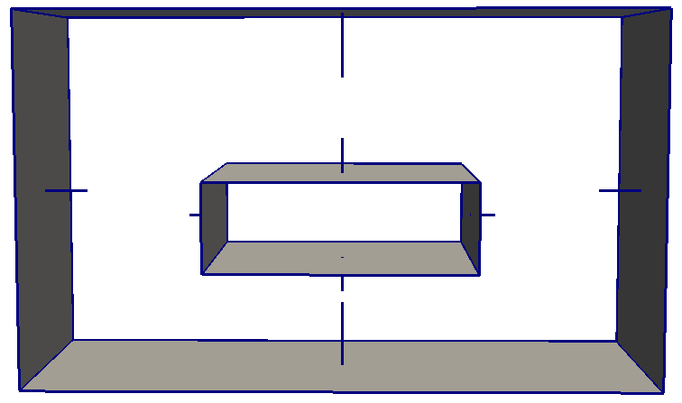
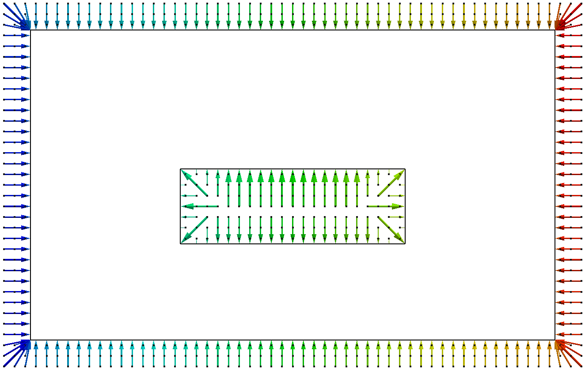
Defining normals analytically¶
Analytical definitions belong under case/casedef/normals. mkbound accepts a single boundary identifier, a comma-separated list or ranges. Select only the intended particle sets: reusing one identifier for unrelated surfaces makes a single plane or cylinder definition ambiguous.
Planar walls¶
For a plane, specify a surface point and a normal direction. The direction is common to the wall, but each particle's displacement length depends on its distance to that plane. The reference also supports point auto="true", which locates the plane from the selected particles and the direction. limitdist/@vdp controls the minimum particle-to-plane distance in multiples of \(d_p\); its reference default is 0.5.
The Poiseuille case uses two automatically located walls. Its opposing directions point from the upper and lower boundaries into the channel. These definitions preserve the case's maxdisth=2.0 search limit.
XML excerpt — channel-planes. XML location: case/casedef/normals. Source: examples/mdbc/02_Poiseuille/CasePoiseuille_NS_LR_Def.xml. This is a fragment, not a complete case.
<norplane mkbound="0">
<point auto="true" comment="Point is calculated automatically accoding to normal configuration" />
<normal x="0" y="0" z="-1" />
<maxdisth v="2.0" comment="Maximum distance to boundary limit. It uses H*maxdisth (default=2)" />
</norplane>
<norplane mkbound="1">
<point auto="true" comment="Point is calculated automatically accoding to normal configuration" />
<normal x="0" y="0" z="1" />
<maxdisth v="2.0" comment="Maximum distance to boundary limit. It uses H*maxdisth (default=2)" />
</norplane>
The following reference alternatives illustrate an explicit plane, a positional filter, and an automatically located plane with an explicit half-spacing limit. Their marker numbers and coordinates are illustrative reference values; they are not additions to the channel case.
XML excerpt — plane-reference. XML location: case/casedef/normals. Source: doc/xml_format/GenCase_CaseTemplate.xml. This is a fragment, not a complete case.
<norplane mkbound="5">
<onlypos>
<posmin x="0" />
<posmax z="1" />
</onlypos>
<point x="0.1" y="0" z="0.1" />
<normal x="0" y="0" z="1" />
<maxdisth v="2" comment="Maximum distance to boundary limit. It uses H*maxdisth (default=2)" />
<clear v="true" comment="Clears previous normal data (default=true)" />
</norplane>
<norplane mkbound="6">
<point auto="true" comment="Point is calculated automatically accoding to normal configuration" />
<limitdist vdp="0.5" comment="Minimun distance (Dp*vdp) between particles and boundary limit to calculate the point (default=0.5)" />
<normal x="0" y="0" z="1" />
<maxdisth v="2.5" comment="Maximum distance to boundary limit. It uses H*maxdisth (default=2)" />
<clear v="false" comment="Clears previous normal data (default=true)" />
</norplane>
Cylindrical and spherical surfaces¶
A cylinder is defined by two points on its axis and its radius. inside=true selects boundary particles inside a solid cylinder, producing fluid-facing vectors towards its exterior. inside=false is the container-cylinder alternative. The reference's limit1 and limit2 control the end limits for inside mode. A sphere uses its centre and radius, with the same solid/container distinction.
The following are reference options with their original coordinates, marker numbers and limits. In both definitions maxdisth is measured in multiples of \(h\); it is not a dimensional distance in metres.
XML excerpt — cylinder-reference. XML location: case/casedef/normals. Source: doc/xml_format/GenCase_CaseTemplate.xml. This is a fragment, not a complete case.
<norcylinder mkbound="8-9">
<center1 x="0" y="0" z="0" />
<center2 x="0" y="0" z="0.5" />
<radius v="0.2" />
<inside v="true" comment="Boundary particles inside the cylinder" />
<limit1 v="false" comment="Active normals to limit 1 for inside mode (default=true)" />
<limit2 v="true" comment="Active normals to limit 2 for inside mode (default=true)" />
<maxdisth v="2" comment="Maximum distance to boundary limit. It uses H*maxdisth (default=2)" />
<clear v="true" comment="Clears previous normal data (default=true)" />
</norcylinder>
XML excerpt — sphere-reference. XML location: case/casedef/normals. Source: doc/xml_format/GenCase_CaseTemplate.xml. This is a fragment, not a complete case.
<norsphere mkbound="7">
<center x="0" y="0" z="0" />
<radius v="0.2" />
<inside v="true" comment="Boundary particles inside the sphere" />
<maxdisth v="2" comment="Maximum distance to boundary limit. It uses H*maxdisth (default=2)" />
<clear v="true" comment="Clears previous normal data (default=true)" />
</norsphere>
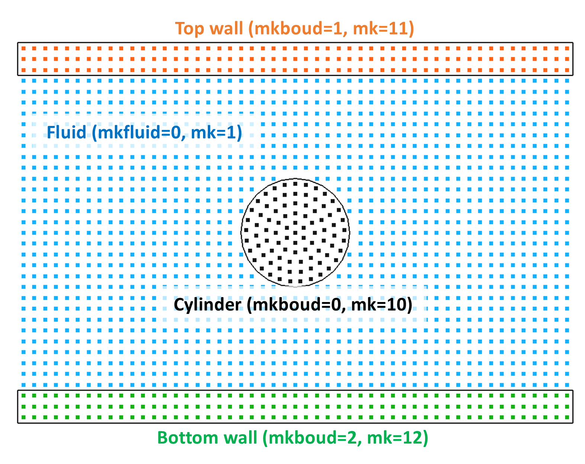
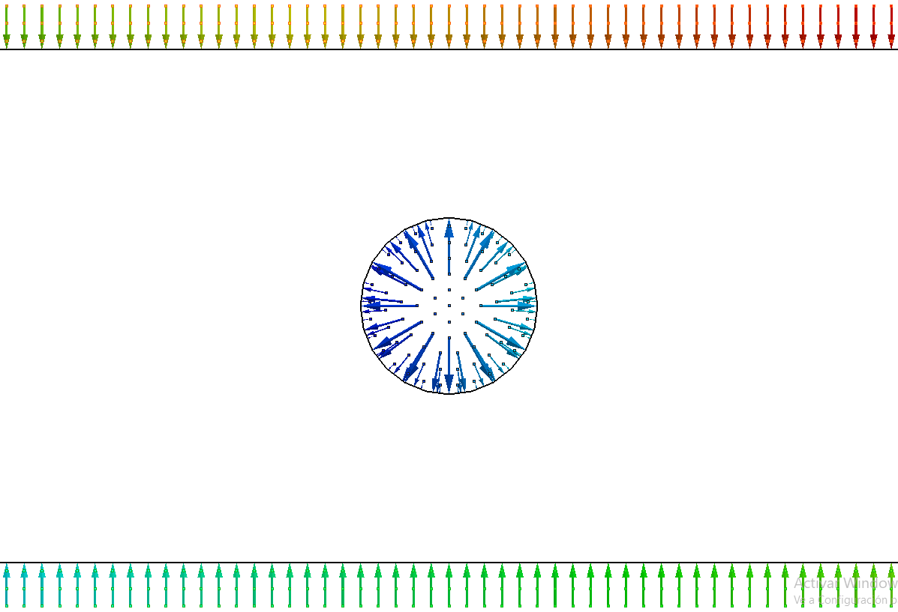
Fixed vectors and local selections¶
norset assigns the same displacement vector, including its length, to every selected particle. It does not calculate a different distance for each layer. Use it only where that common displacement is geometrically appropriate. onlypos restricts the selection by coordinate limits; omitted coordinate bounds remain unspecified by the excerpt.
XML excerpt — fixed-normal-reference. XML location: case/casedef/normals. Source: doc/xml_format/GenCase_CaseTemplate.xml. This is a fragment, not a complete case.
<norset mkbound="0,2-4">
<onlypos>
<posmin x="1" y="2" z="3" />
<posmax x="11" y="22" z="33" />
</onlypos>
<normal x="0" y="1" z="0" />
</norset>
The reference additionally provides norparts for selected boundary particles. It exposes a maxdisth search limit; the short option definition does not establish that particle-based reconstruction is a replacement for an accurately represented surface at a complex corner.
XML excerpt — particle-normal-reference. XML location: case/casedef/normals. Source: doc/xml_format/GenCase_CaseTemplate.xml. This is a fragment, not a complete case.
<norparts mkbound="5,7-9">
<maxdisth v="2.1" comment="Maximum distance to boundary limit. It uses H*maxdisth (default=2)" />
</norparts>
| Normal definition | Geometric information supplied | Important distinction |
|---|---|---|
norgeometry |
Actual boundary surface in VTK | Surface orientation and offset must be correct |
norplane |
Point and direction, or automatic plane location | Displacement length varies with particle position |
norcylinder |
Axis points, radius and inside/outside selection | End-limit settings are separate controls |
norsphere |
Centre, radius and inside/outside selection | Select the intended spherical particle set |
norset |
One complete displacement vector | Same direction and length for all selected particles |
norparts |
Selected particles and search limit | Inspect the resulting vectors before use |
Density reconstruction and slip modes¶
Ghost-node density and pressure¶
The original mDBC formulation, selected by M22, reconstructs the ghost-node density and its gradient using the Liu and Liu correction matrix, with a normalised Shepard fallback when the matrix cannot be inverted. Fluid particles interact with the boundary particles in their kernel support. In three dimensions, its local system can be written as
For an explicit definition of that matrix, let \(q_{j0}=1\), \(q_{j1}=x_j-x_g\), \(q_{j2}=y_j-y_g\), \(q_{j3}=z_j-z_g\), and let \(D_0 W=W\), \(D_1 W=\partial_xW\), \(D_2 W=\partial_yW\), \(D_3 W=\partial_zW\). With fluid-particle volume \(V_j=m_j/\rho_j\), the entries are
The boundary density in this formulation is then extrapolated from the ghost node:
The newer density treatment used by NS, FS and V0 first reconstructs ghost-node density, using matrix inversion when sufficiently well conditioned and a normalised Shepard sum otherwise. A pressure-cloning step accounts for gravity and boundary acceleration:
Here \(c_0\) is the reference speed of sound, \(\rho_0\) the reference density, \(\mathbf a_b\) the boundary acceleration and \(\widehat{\mathbf n}_b\) the unit normal. The unit direction in these equations is distinct from the geometric displacement supplied to normal generation. These relations describe the boundary reconstruction; they do not replace the fluid equation-of-state configuration.
The newer method also checks the divergence of position at the ghost node to distinguish submerged and unsubmerged boundary particles. Submerged particles have their density, pressure and velocity updated. Unsubmerged particles are switched off for fluid interaction and assigned reference density. This interaction state is not removal of boundary geometry.
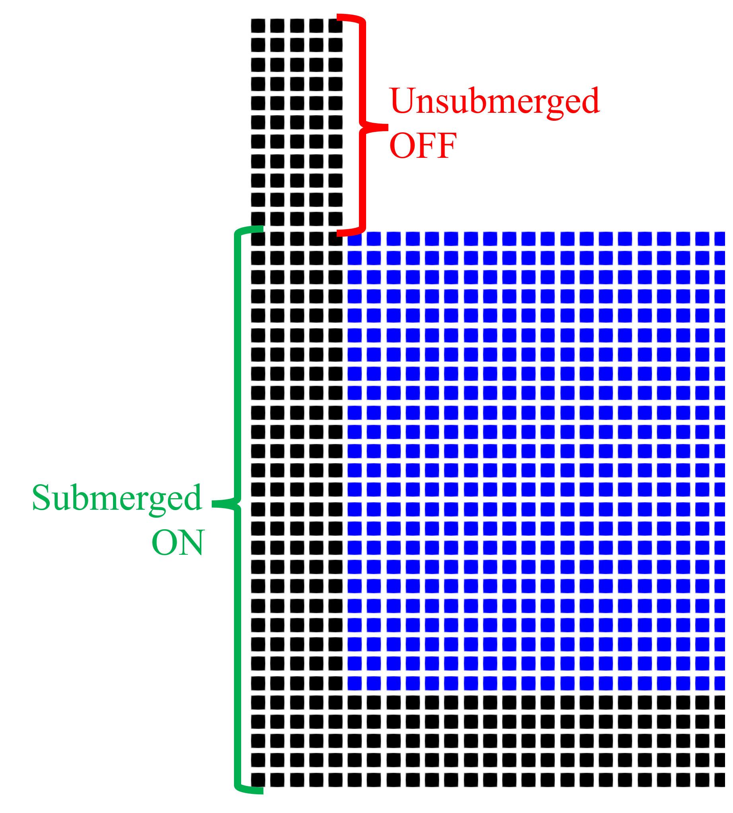
Velocity conditions¶
Let \(\mathbf u_w\) denote wall velocity and \(\mathbf u_g\) the interpolated ghost-node velocity. The normalised interpolation is
The no-slip reconstruction uses the reflected velocity \(\mathbf u_b=2\mathbf u_w-\mathbf u_g\). For a stationary wall this becomes \(\mathbf u_b=-\mathbf u_g\). Its normal and tangential projections are
The tangential component enters the viscous treatment, whereas the wall velocity is used for the boundary contribution to the density-gradient continuity calculation. This distinction matters: the reflected ghost velocity is not simply substituted into every boundary interaction.
In the laminar interaction equations used to illustrate this distinction, the viscous term depends on the relative velocity, while the continuity equation uses its own relative-velocity contribution:
Here \(\nu\) is kinematic viscosity, \(\mathbf r_{ij}\) is particle separation and \(\mathbf u_{ij}\) denotes the relative velocity appropriate to the term. For a boundary neighbour, the viscous contribution uses the tangential boundary velocity, while continuity uses wall velocity. These equations explain the laminar treatment; artificial-viscosity cases retain their own selected formulation.
For free slip, the teaching relation is \(\mathbf u_b=\mathbf u_g\), with the tangential component obtained by the same projection. This relation describes the reconstructed boundary state and should not be read as cancelling the separate normal-wall treatment of a moving boundary. The V0 option instead imposes the wall velocity, giving zero boundary velocity for a stationary wall, while retaining the newer density reconstruction. M22 also imposes wall velocity but retains the original density extrapolation.
SlipMode value |
Boundary treatment | Density reconstruction | Additional NoPenetration |
|---|---|---|---|
NS |
No slip; reflected ghost velocity | New pressure-cloning treatment | Available |
FS |
Free slip; ghost velocity used for the tangential treatment | New pressure-cloning treatment | Available |
V0 |
TanVel=0; boundary velocity follows wall velocity | New pressure-cloning treatment | Available |
M22 |
Original mDBC 2022 velocity treatment | Original density extrapolation | Not applied |
Use ViscoBoundFactor=1 for the documented viscous wall treatment. The teaching material specifies this for NS and V0; the current reader also warns when the factor differs from 1 for NS or FS. This factor multiplies boundary viscosity and is not the switch selecting a slip mode. Retain the chosen viscosity formulation and magnitude of the complete example.
Activating uniform mDBC in v6¶
The sloshing case below explicitly selects no slip and enables the additional no-penetration correction. Its density diffusion is Fourtakas (FO) with coefficient 0.1. Density diffusion is recommended in the mDBC teaching workflow to control fluid instabilities; this excerpt states the case's explicit configuration rather than relying on an implicit default.
XML excerpt — uniform-mdbc. XML location: case/execution/parameters. Source: examples/mdbc/03_Sloshing/CaseSloshingLR_NSNP_Def.xml. This is a fragment, not a complete case.
<parameter key="Boundary" value="mDBC" comment="Boundary method: DBC, mDBC, MIX:MixBC (default=DBC)" />
<parameter key="SlipMode" value="NS" comment="Slip mode for mDBC: NS:No-slip, FS:Free slip, V0:TanVel=0, M22:mDBC 2022 (default=NS)" />
<parameter key="NoPenetration" value="Y" comment="Activate No-Penetration option for mDBC: Y/N (default=N)" />
<parameter key="ViscoBoundFactor" value="1" comment="Multiply viscosity value with boundary (default=1)" />
<parameter key="DensityDT" value="FO" comment="Density Diffusion Term: NO:None, FO:Fourtakas (default=FO)" />
<parameter key="DensityDTvalue" value="0.1" comment="DDT value (default=0.1)" />
Boundary=mDBC activates the uniform method, and SlipMode chooses its velocity/density treatment. The documented default slip mode is NS. NoPenetration is a separate Boolean parameter, with N as its default. Set it explicitly when comparing options. Use the named v6 values shown here; older numeric boundary and slip selections are deprecated.
Additional no-penetration correction¶
NoPenetration=Y activates an additional near-wall velocity correction for NS, FS and V0. It does not select free slip or no slip, and it does not make inaccurate normals acceptable. N disables this extra correction; the selected boundary condition still remains active.
The correction acts on nearby fluid particles approaching an enabled boundary. The current implementation first restricts boundary neighbours by particle separation, projected distance and normal length, then treats each Cartesian component separately. Consequently, proximity alone does not imply that a correction will be applied.
For the following description, \(\mathbf N=\mathbf x_g-\mathbf x_b=2\mathbf N_s\) is the internal displacement to the ghost node, \(N=|\mathbf N|\), \(\widehat{\mathbf n}=\mathbf N/N\), and \(\mathbf r=\mathbf x_f-\mathbf x_b\). The initial geometric gates are
For a non-negligible normal component \(N_k\), the component is considered only when \(|r_k\widehat n_k|<0.75|N_k|\) and \(|N_k|>0.001d_p\). Its relative velocity must point towards the wall: \((u_{f,k}-u_{w,k})\widehat n_k<0\). The clipped distance ratio and the current cubic factor are
Each accepted neighbour contributes
The accepted contributions are averaged separately for each direction before application. Particles moving away from the boundary receive no contribution from that component. The ratio is limited to 0.25–0.75; the cubic factor decreases from 2 to 0 over that interval. These are algorithm constants, not additional XML parameters to add to the case.
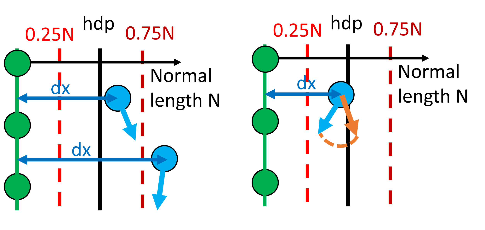
Comparing configurations in package cases¶
Sloshing with moving walls¶
examples/mdbc/03_Sloshing/CaseSloshingLR_NSNP_Def.xml demonstrates a moving container with geometry-generated normals, SlipMode=NS and NoPenetration=Y. The particle spacing is 0.004 m and \(h/d_p=2\). The named drawing list exports the half-spacing surface, while four boundary layers support the selected smoothing length. The wall motion remains defined by the complete case and its SloshingMotionData.dat input. The normal-generation excerpt does not replace that motion definition.
Channel flow and wall behaviour¶
The Poiseuille examples provide planar normals and contrasting wall treatments. Read the parameter value inside each file: a filename suffix is not a reliable substitute for SlipMode.
Package path under examples/mdbc/02_Poiseuille/ |
Actual SlipMode |
NoPenetration |
Laminar viscosity |
|---|---|---|---|
CasePoiseuille_LR_Def.xml |
M22 |
N |
0.1 m²/s |
CasePoiseuille_NS_LR_Def.xml |
V0 |
N |
0.1 m²/s |
CasePoiseuille_FS_LR_Def.xml |
FS |
N |
0.1 m²/s |
CaseRunDown_NS_Def.xml |
NS |
N |
0.1 m²/s |
CaseRunDown_FS_Def.xml |
FS |
N |
0.1 m²/s |
The last two files concern run-down and are not interchangeable initial conditions for the steady channel comparison. The following selection retains the actual settings in CasePoiseuille_NS_LR_Def.xml, including its V0 value and laminar viscosity.
XML excerpt — poiseuille-settings. XML location: case/execution/parameters. Source: examples/mdbc/02_Poiseuille/CasePoiseuille_NS_LR_Def.xml. This is a fragment, not a complete case.
<parameter key="SlipMode" value="V0" comment="Slip mode for mDBC: NS:No-slip, FS:Free slip, V0:TanVel=0, M22:mDBC 2022 (default=NS)" />
<parameter key="NoPenetration" value="N" comment="Activate No-Penetration option for mDBC: Y/N (default=N)" />
<parameter key="ViscoTreatment" value="LAM" comment="Viscosity formulation: LAM:Laminar, ART:Artificial (default=LAM)" />
<parameter key="Visco" value="0.1" comment="Viscosity value. Typically 0.01 for Artificial and 1e-6 m^2/s (water kinematic viscosity) for Laminar" />
<parameter key="ViscoBoundFactor" value="1" comment="Multiply viscosity value with boundary (default=1)" />
<parameter key="DensityDT" value="FO" comment="Density Diffusion Term: NO:None, FO:Fourtakas (default=FO)" />
<parameter key="DensityDTvalue" value="0.1" comment="DDT value (default=0.1)" />
Mixed boundary conditions by boundary identifier¶
Select Boundary=MIX in execution/parameters, then specify the per-boundary conditions in execution/special/mixboundary. The global SlipMode and NoPenetration parameters are not the selectors for mixed boundaries; boundtype and nopenetration on each mixed-boundary entry determine the treatment.
boundtype |
Equivalent uniform treatment | Per-entry nopenetration |
|---|---|---|
DBC |
DBC | No additional mDBC correction |
MDBC_V0 |
M22 |
No additional mDBC correction |
MDBC_T0 |
V0 |
0 or 1 |
MDBC_NS |
NS |
0 or 1 |
MDBC_FR |
FS |
0 or 1 |
The mixed-boundary names are deliberately different from the uniform SlipMode names: MDBC_V0 means the old mDBC, whereas MDBC_T0 means the newer TanVel=0 treatment. Preserve MDBC_FR exactly for free slip. The local Boolean attribute uses 0/1 in the reference and examples; the global v6 parameter uses N/Y.
XML excerpt — mixed-activation. XML location: case/execution/parameters. Source: examples/mdbc/11_MixBC/CaseDamBreak3D_Mix_NS_FR_Def.xml. This is a fragment, not a complete case.
<parameter key="Boundary" value="MIX" comment="Boundary method: DBC, mDBC, MIX:MixBC (default=DBC)" />
XML excerpt — mixed-assignment. XML location: case/execution/special. Source: examples/mdbc/11_MixBC/CaseDamBreak3D_Mix_NS_FR_Def.xml. This is a fragment, not a complete case.
<mixboundary>
<!-- boundtype: DBC, MDBC_V0 (Old mDBC), MDBC_T0 (mDBC2 tanvel=0), MDBC_NS (mDBC2 No-slip), MDBC_FR (mDBC2 Free slip) -->
<!-- nopenetration: 1/0 Activate No-Penetration option for TanVel=0, No-slip or Free-slip mDBC -->
<!-- mkbound: mkbound value or list of values (2,5,7-8) -->
<default boundtype="MDBC_NS" nopenetration="0" />
<bcmk mkbound="0-1" boundtype="MDBC_NS" nopenetration="1" />
<bcmk mkbound="2,3" boundtype="MDBC_FR" nopenetration="1" />
</mixboundary>
The default entry supplies the treatment for markers without a specific assignment. The two bcmk entries above assign no slip with no penetration to 0-1, and free slip with no penetration to 2,3. Both boundtype and nopenetration must be supplied on these entries. If no default is supplied, every relevant boundary marker needs a specific assignment. Avoid overlapping marker selections: the reader applies later matching entries after earlier ones.
Prepare and inspect normals across the boundary geometry used by the mixed case, including transitions between boundary types. The workshop workflow defines normals for all boundaries, including DBC portions; the mixed dam-break case follows a geometry-wide normal-generation step. The presence of a DBC assignment does not remove the geometric requirements of neighbouring mDBC portions.
Mixed conditions can also distinguish side walls from the beach and cylinder in a wave tank. Mixed conditions should follow the intended wall physics.
Initialising from a previous particle field¶
A previous particle dataset can supply initial velocity, density or pressure and a free-surface shape. This is useful when a new discretisation should begin from an established flow rather than from rest. It is an interpolation workflow, with its own consistency checks; it is not an exact restart of every solver state.
For a field \(F\), the documented normalised interpolation has the form
The current GenCase template names the velocity element velpart and the density element densitypart. Both belong in casedef/initials. The following two reference options retain the template's Part_0028.bi4 input and minimum fluid-volume ratio of 0.5. They require a compatible, available PART dataset; the filename is not an instruction to generate that file automatically.
XML excerpt — previous-velocity. XML location: case/casedef/initials. Source: doc/xml_format/GenCase_CaseTemplate.xml. This is a fragment, not a complete case.
<velpart mkfluid="0">
<minratio v="0.5" comment="Minimum fluid ratio (volume) to apply interpolated values" />
<partfile v="Part_0028.bi4" comment="PART file with input particle data" />
</velpart>
XML excerpt — previous-density. XML location: case/casedef/initials. Source: doc/xml_format/GenCase_CaseTemplate.xml. This is a fragment, not a complete case.
<densitypart mkfluid="0">
<minratio v="0.5" comment="Minimum fluid ratio (volume) to apply interpolated values" />
<partfile v="Part_0028.bi4" comment="PART file with input particle data" />
<fitpress v="true" comment="Fits the pressure instead of density" />
</densitypart>
| Element or attribute | Role |
|---|---|
velpart/@mkfluid |
Fluid set receiving interpolated velocity |
densitypart/@mkfluid |
Fluid set receiving interpolated density/pressure |
minratio/@v |
Minimum supporting fluid volume ratio for applying interpolated values |
partfile/@v |
Source PART data file |
fitpress/@v |
With true, fit pressure rather than density |
A free-surface reconstruction is a separate geometry operation. The workshop workflow first fills the target domain with fluid particles and then filters that set against the previous BI4 fluid field, removing particles outside the reconstructed surface. This permits a finer target spacing while retaining the previous surface profile. Check the target mkfluid, coordinate alignment, source time and available fluid support. Interpolating properties alone does not trim the free surface.
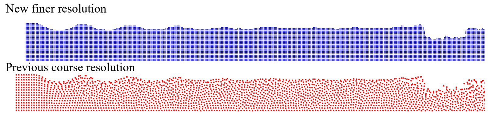
Transfer to a new spacing still requires examination of the initial transient and the target flow state.
Inspecting normal vectors¶
Normal checks should compare vectors with both the boundary particles and the actual surface. In ParaView, open the boundary and fluid VTK files together, add the actual-surface VTK where available, and display the normal vector field with glyphs. Choose the normal field explicitly and check its magnitude as well as its direction. Glyph scaling used for visualisation must not be mistaken for a change to the stored vectors.
Inspect flat surfaces first, then corners, oblique faces and transitions between marker sets. Vectors should point from boundary particles towards the fluid-facing surface, with lengths consistent with particle depth and the half-spacing offset. A particle-based estimate that appears reasonable on a flat wall can be misleading at a wedge or a complex intersection; overlay the actual geometry when checking such regions.
| Output | Interpretation |
|---|---|
[CaseName]_hdp_Actual.vtk |
Actual surface used by the geometry-based workflow |
Geometry-shape VTK produced with svshapes |
Triangles/quads and their surface-normal orientation |
CfgInit_Normals.vtk |
Initial vectors from boundary particles to the surface |
CfgInit_NormalsGhost.vtk |
Vectors from boundary particles to ghost nodes; twice the surface displacement for a fresh initialisation |
The last two files are solver initialisation outputs; generating a geometry VTK alone does not produce them. Restart variants append _Restart to the names. Zero vectors indicate particles without assigned normal data; inspect their location rather than hiding them through glyph sampling. A complete absence of valid vectors prevents the intended mDBC reconstruction.
The source wedge view displays CaseStillWedgeHR_Bound.vtk, its Glyph1 normals and CaseStillWedgeHR_hdp_Actual.vtk. These are the original inspection filenames, rather than fixed names required by other cases. The figure retains the normal-length colour scales and both corner views.
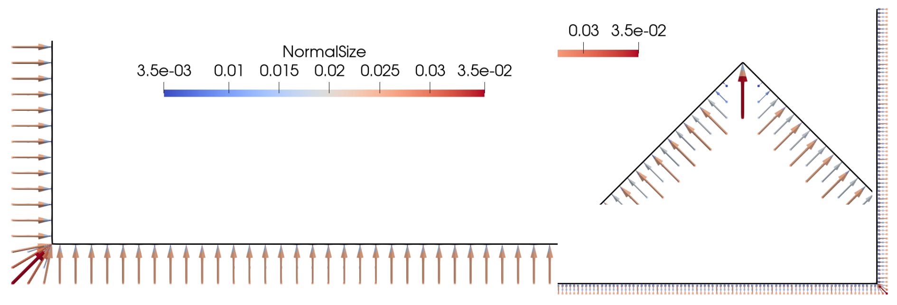
The source 3D inspection uses CaseDamBreak3D_Mix_NS_FR_Bound.vtk and CaseDamBreak3D_Mix_NS_FR_hdp_Actual.vtk; its ParaView controls are omitted from the scientific figure. The complete normal-size colour scale and wall/corner normal distributions are retained.
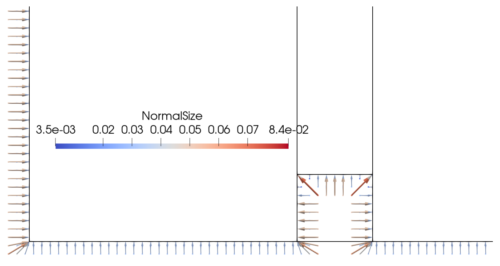
Requirements and diagnostic checks¶
Retain sufficient boundary layers for the smoothing length, the correct physical surface offset and fluid-facing vector orientation. Increasing a search distance cannot correct an incorrectly oriented or misplaced surface. Check that the normal-generation selection covers the particle sets used by mDBC, and that diagnostic output is interpreted with the appropriate surface/ghost length convention.
For moving or floating boundaries, use the actual wall motion in the case and preserve its collision model. The solver recommends Chrono collisions when applying mDBC to floating bodies; the Chrono XML Guide explains that separate configuration. Flexible-structure coupling imposes further integration and slip-mode restrictions, so a general mDBC excerpt must not be treated as a complete flexible-structure setup.
| Observation | Configuration to inspect |
|---|---|
| Missing or zero normal vectors | Marker selection, search limits and availability of the geometry file |
| Vectors pointing away from the fluid | Surface orientation and container normal inversion |
| Incorrect corner vectors | Actual geometry, layer placement and the maximum normal length |
| Unexpected channel profile | Actual SlipMode, wall motion, viscosity formulation and ViscoBoundFactor |
| No additional near-wall correction | NoPenetration, eligible slip mode, local mixed assignment and geometric/approach gates |
| Different conditions not applied by marker | Boundary=MIX, marker coverage and overlapping bcmk entries |
| Poor transferred initial field | PART availability, source/target coordinates, support ratio and free-surface reconstruction |
For the available case families and variants, see the mDBC Examples Catalogue.
XML reference coverage¶
The relevant definitions are distributed across doc/xml_format/GenCase_CaseTemplate.xml (geometry, initials and normals), doc/xml_format/_FmtXML__Parameters.xml (solver parameters) and doc/xml_format/_FmtXML_MixBoundary.xml (per-marker boundary assignments). There is no single dedicated complete mDBC format file in this reference set. The verified excerpts above document these specific configurations without reproducing the unrelated sections of the generic case template.
doc/xml_format/_FmtXML_Initialize.xml is a limited developer-oriented initialisation example. It is not the full normal-generation reference and does not replace casedef/normals in the GenCase template.
Further reading¶
The original reconstruction is described by English et al., Modified dynamic boundary conditions (mDBC) for general-purpose smoothed particle hydrodynamics (SPH): application to tank sloshing, dam break and fish pass problems, Computational Particle Mechanics 9, 1–15 (2022), DOI 10.1007/s40571-021-00403-3. The pressure-cloning approach is discussed by Antuono et al., Clone particles: A simplified technique to enforce solid boundary conditions in SPH, Computer Methods in Applied Mechanics and Engineering 409, 115973 (2023). These formulations provide context for the boundary treatment; case-specific numerical and physical validation remains necessary.